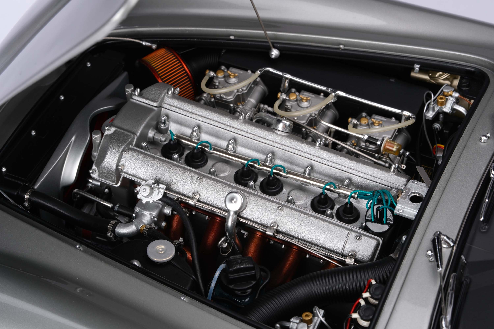
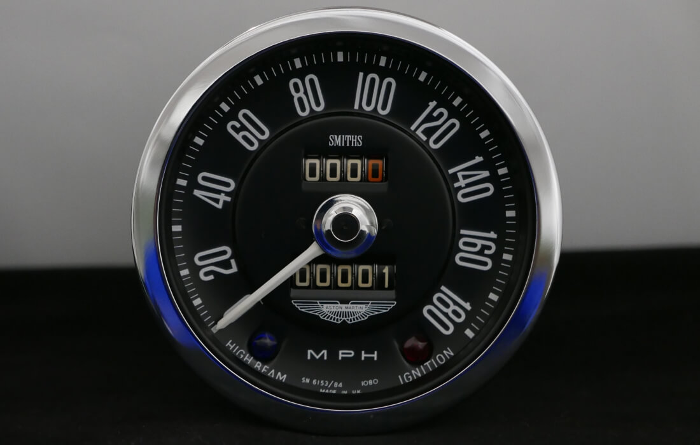
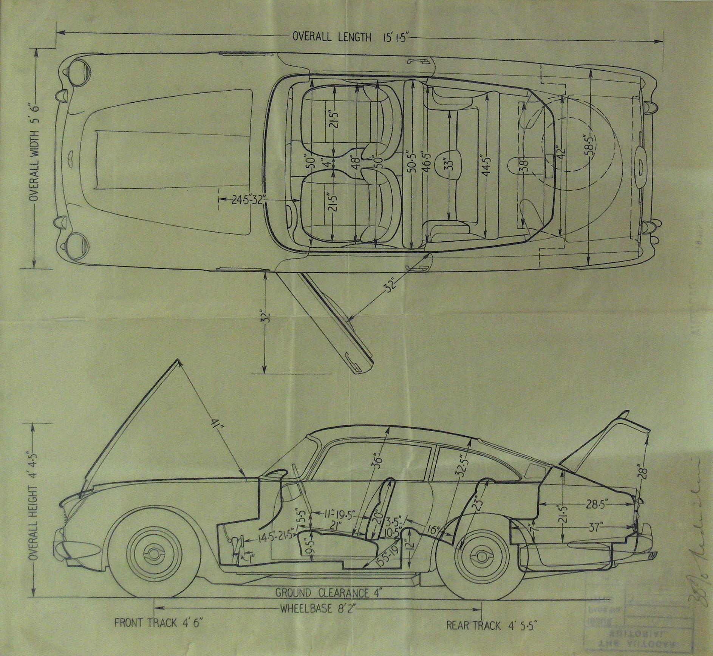

Aston Martin DB5

VIEW GALLERY
Specifications
- Engine Type: Inline 6-cylinder gasoline engine
- Displacement: 4.0 liters (3995 cc)
- Fuel System: Triple SU carburetors
- Power Output: 282 horsepower
- Transmission: 5-speed manual or 3-speed automatic
Performance
- 145 mph (233 km/h)
- Acceleration (0-60 mph): Around 8 seconds
Design
- Body Style: Two-door coupe with a classic and elegant design
- Material: Lightweight aluminum body with steel frame for strength
- Wheel Size: 15-inch wire-spoke wheels with thin, high-performance tires
Racing and Achievements
- James Bond Icon: Although not primarily a racing car, the
DB5 became famous for its role as James Bond’s car in the
1964 film Goldfinger. - Heritage and Influence: The DB5 helped establish Aston Martin
as a key player in the luxury sports car market.
- Endurance and Rallying: While not a full-time race car, the
DB5 was entered in a few endurance races and rally events